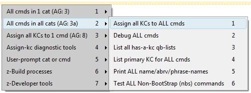

[BACK] (XBN-PhraseExpress is released under the LPGL 2.1)
The TPKC user-menu is part of the XBNPE user-menu.
Selecting the TPKC item (by, for example, clicking it with your mouse) displays the main TPKC menu:
(Click on an item in the menu for further information).
(PhraseExpress folder structure)
[top] TPKC user-menu: All commands in 1 categoryClick on any command (in the far right, un-dimmed section) for details on each available command.

[BACK] TPKC user-menu: All-cmds-in-1-cat: List primary KC for all cmds in 1 category[all, CAT, all debugging tools]
Prints the primary key-command for all commands in a single category. Commands with no key-commands are suppressed.
The primary key-command, for all commands in 1 category...
...that have at least one kc
Category 'edit' (total commands=67, with-a-kc=32):
EditAlignRight (nbs-kcs=1)
zTPAlignRight -- {#insert zCSpEE}{#sleep 10}
EditBackspace (nbs-kcs=4)
zTPDeleteL1c -- {#insert zSpBKSP}{#sleep 5}
EditCapitalize (nbs-kcs=2)
zTPTitleCase -- {#insert zCSpUU}{#sleep 10}
EditCopy (btstrp, nbs-kcs=1)
zTPCopy -- {#CTRL -chars j}{#insert zTSlp}{#sleep 10}
EditCopyAppend (nbs-kcs=2)
zTPCopyAppend -- {#insert zCSpCC}{#sleep 50}
...
[BACK] TPKC user-menu: All-cmds-in-1-cat: Test all nbs-cmds in 1 category[all, cat, ONE, all debugging tools]
Tests all Non-BootStrap (nbs) commands in the selected category.
[BACK] TPKC: Test all nbs-cmds in cat: Nbs test formatEvery command must has exactly one or two phrases:
All commands have the "has-a-kc-and-a-test?" phrase. Only nbs-phrases have a test phrase. Note that nbs-test phrases can exist even if that command has no kcs assigned to it.
It is possible to "force" the test of a single unassigned nbs-phrase.
[BACK] TPKC: Test all nbs-cmds in cat: "Force" test an unassigned nbs-commandIt is possible to "force" a test for a single nbs-command that, according to the TPKC-project, has no key-command assigned to it. Use this to test a specific built-in TextPad command that
TextPad > Configure > Preferences > KeyboardzForceTestKeyCmdEsc
zForceTestKeyCmd
zForceTestKeyCmd is
{#insert zASpOO}
zForceTestKeyCmd must equal
\\\{#insert zASpOO\\\}
The intent of forcing an nbs-test, is to be able to create-and-then-verify tests, without being forced to fully-configure the command itself into the TPKC-project. Without the ability to force a test, it would be required that you
Specifically, to "force" the test of an nbs-command that you have not yet entered into (and perhaps do not want to enter into) your user-specific command-configuration,
[BACK] TPKC: Test all nbs-cmds in cat: Nbs test format: The "has-a-kc-and-a-test?" phraseThe "has-a-kc-and-has-a-test?" phrase is named
zzzNewFlKcVrfy_[category]_[commandname]_M_cmd1this
This either presents the there-is-no-test dialog, or actually executes the test. The contents of this phrase is always exactly:
{#insert zvCMD_ABRV_1C_sf[commandname]}
{#insert {#COND -if {#insert zzzHasAKCOrFrcTst_yes_M_cmd1} = yes
-then zzzNewFlKcVrfy_[category]_[commandname]_M_cmd1this
-else z1slp}}
Example:
zzNewFlV1Nbs_file_FileExit_ifKc
{#insert zvCMD_ABRV_1C_sfFileExit}
{#insert {#COND -if {#insert zzzHasAKCOrFrcTst_yes_M_cmd1} = yes
-then zzzNewFlKcVrfy_file_FileExit_M_cmd1this
-else z1slp}}
[BACK] TPKC: Test all nbs-cmds in cat: Nbs test format: The test phraseIf an nbs-command has a test (regardless if it is actually assigned a key-command) then that test must setup, execute, and cleanup all necessary resources.
The test phrase must be named
zzzNewFlKcVrfy_[category]_[commandname]_M_cmd1this
and must be in the format
(*Actually hit the key-command (assigned in the if-has-a-test phrase)*)
{#insert zzHitActlOrFrcVrfyKC_M_cmd1}
(*Set up and display the test-message*)
{#SETPHRASE -description zvTEST_MSG -content
Attempting to .... Please ... before pressing [OK].)
-autotext zvTEST_MSG -folder ctvv_folder}
{#insert zzzShowVerifyTestDlg_M_cmd1Msg}
(*Clean up: Prepare for potential next-test*)
{#insert zFcsTPFileNew}
It is guaranteed before calling this test phrase, that a new file is opened. Therefore, the final step in all tests must be to open a new file.
For example:
zzzNewFlKcVrfy_file_FileExit_M_cmd1this
(*Actually hit the key-command (assigned in the if-has-a-test phrase)*)
{#insert zzHitActlOrFrcVrfyKC_M_cmd1}
(*Set up and display the test-message*)
{#SETPHRASE -description zvTEST_MSG -content
Attempting to close TextPad. If files are unsaved, it's
currently prompting you to save them. If all were saved
(or none were open), it already closed. (Re~open TextPad,
or press [Save none], or [No] in the dialog, before pressing
[OK].)
-autotext zvTEST_MSG -folder ctvv_folder}
{#insert zzzShowVerifyTestDlg_M_cmd1Msg}
(*Clean up: Prepare for potential next-test*)
{#insert zFcsTPFileNew}
[BACK] TPKC user-menu: Test all nbs-cmds: Not TextPad-bootstrapsTextPad-bootstrap commands are tested externally from the TPKC-project (tp-bootstraps are not tested by the TPKC-project). Therefore TextPad-bootstrap commands must have their TPKC-tests set up like this:
zzNewFlV1Nbs_[category]_[commandname]_ifKc
{#insert zvCMD_ABRV_1C_sf[commandname]}
{#insert zzzNoVerificationForBtstrpsDlg_M_cmd1}
For example:
zzNewFlV1Nbs_file_FileClose_ifKc
{#insert zvCMD_ABRV_1C_sfFileClose}
{#insert zzzNoVerificationForBtstrpsDlg_M_cmd1}
TP-bootstraps have no test phrase.
[BACK] TPKC user-menu: All-cmds-in-1-cat: Print all name/abrv/phrase-names[all, cat, all debugging tools]
Prints the command-name, abbreviation, and phrase-name for all commands in the current category. For example:
... edit > EditAlignRight / zTPAlignRight (ealr) edit > EditBackspace / zTPDeleteL1c (ebksp) edit > EditCapitalize / zTPTitleCase (ecptl) edit > EditClearAll / zTPClearAll (eclall) edit > EditCopy / zTPCopy (ecp) edit > EditCopyAllFileNames / zTPCopyAllFileNames (ecpallfnms) edit > EditCopyAppend / zTPCopyAppend (ecpapp) edit > EditCopyAsHTML / zTPCopyAsHTML (ecphtm) edit > EditCopyFileName / zTPCopyFileName (ecpfnm) edit > EditCopyLine / zTPCopyLine (ecpln) edit > EditCopyLineAppend / zTPCopyLineAppend (ecplnapp) edit > EditCopyTaggedLines / zTPBookmarkCopyAll (ecpbkmlns) ...
For a single command, its command-name, abbreviation, and phrase-name is listed in the assign all kcs to one command dropdown.
[BACK] TPKC user-menu: All-cmds-in-1-cat: Debug all cmds in 1 category[all, cat (prompt), ONE, all debugging tools]
Prints out all debuging information for all commands in a single category.
[BACK] TPKC user-menu: All-cmds-in-1-cat: Assign all kc-s to all cmds in 1 category[all, cat, ONE (prompt), all debugging tools]
Assigns all key-commands to every command in the currently selected category. This uses an internal has-a-kc qbl to automatically skip over commands that have no key-commands assigned to them.
[top] TPKC user-menu: All cmds in all catsClick on a (non-dimmed) item for information.
